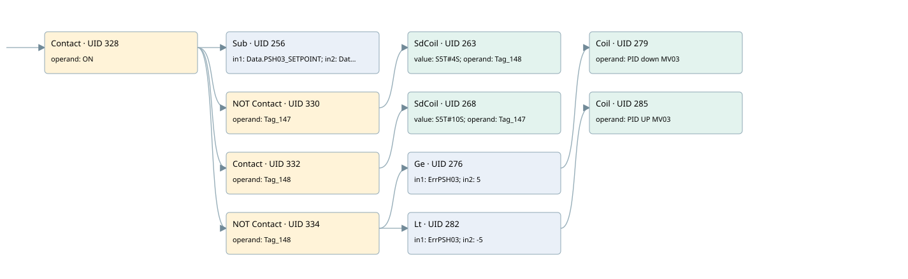

mv03 controlled by psh03
valve control loop · 검색 색인 순서 4 · 원본 내부 NID 추정 3
백업 PLF 원본의 2916055 바이트 위치에서 복원한 XML. 검색 문서 1705의 객체 키 161022007412000000000000와 연결했다. 이름 해석 17/17개. 남은 RefId는 상수 또는 미해석 참조다.
연결 구조 다시 그리기
원본 Part/PCon/Wire를 이용한 연결도다. TIA 화면의 래더 배치 또는 실행 결과를 재현한 그림은 아니다. 핀 연결은 아래 표와 원본 XML을 기준으로 읽는다. 노드 위에 마우스를 두면 피연산자 이름을 볼 수 있다.

접점·코일·블록과 피연산자
| Part UID | Gate | Negated 핀 | 연결 피연산자 |
|---|---|---|---|
| 328 | Contact | operand = ON | |
| 256 | Sub | in1 = Data.PSH03_SETPOINT; in2 = Data.PSH03; out = ErrPSH03 | |
| 330 | Contact | operand | operand = Tag_147 |
| 263 | SdCoil | value = S5T#4S; operand = Tag_148 | |
| 332 | Contact | operand = Tag_148 | |
| 268 | SdCoil | value = S5T#10S; operand = Tag_147 | |
| 334 | Contact | operand | operand = Tag_148 |
| 276 | Ge | in1 = ErrPSH03; in2 = 5 | |
| 279 | Coil | operand = PID down MV03 | |
| 282 | Lt | in1 = ErrPSH03; in2 = -5 | |
| 285 | Coil | operand = PID UP MV03 |
접점 경로를 펼친 조건식
Contact·O/A·비교기의 원본 연결을 읽기 쉽게 펼친 보조 해석이다. POWER는 전원 레일 시작을 뜻한다. 호출 블록·에지·타이머의 내부 동작과 다중 쓰기 순서는 이 표로 실행 검증하지 않았다. 미해석 핀과 RefId는 원문 연결표에서 확인한다.
| UID | 동작 | 대상 | 원본 접점 경로 | 내용 |
|---|---|---|---|---|
| 263 | SdCoil | Tag_148 | (ON AND NOT [Tag_147]) | 시간 동작 SdCoil; 타이머 의미 추가 확인 / 시간 인자 S5T#4S |
| 268 | SdCoil | Tag_147 | (ON AND Tag_148) | 시간 동작 SdCoil; 타이머 의미 추가 확인 / 시간 인자 S5T#10S |
| 279 | Coil | PID down MV03 | ((ON AND NOT [Tag_148]) AND [ErrPSH03 >= 5]) | 조건에 따른 Coil 기록 |
| 285 | Coil | PID UP MV03 | ((ON AND NOT [Tag_148]) AND [ErrPSH03 < -5]) | 조건에 따른 Coil 기록 |
원본 배선 연결
| Wire UID | 동일 Wire 연결 끝점 |
|---|---|
| 336 | Powerrail {} ↔ Part 328.in |
| 303 | ORef 286 (ON) ↔ Part 328.operand |
| 329 | Part 328.out ↔ Part 256.en ↔ Part 330.in ↔ Part 332.in ↔ Part 334.in |
| 304 | ORef 287 (Data.PSH03_SETPOINT) ↔ Part 256.in1 |
| 305 | ORef 288 (Data.PSH03) ↔ Part 256.in2 |
| 306 | Part 256.out ↔ ORef 289 (ErrPSH03) |
| 308 | ORef 291 (Tag_147) ↔ Part 330.operand |
| 331 | Part 330.out ↔ Part 263.in |
| 307 | ORef 290 (S5T#4S) ↔ Part 263.value |
| 310 | ORef 292 (Tag_148) ↔ Part 263.operand |
| 312 | ORef 294 (Tag_148) ↔ Part 332.operand |
| 333 | Part 332.out ↔ Part 268.in |
| 311 | ORef 293 (S5T#10S) ↔ Part 268.value |
| 314 | ORef 295 (Tag_147) ↔ Part 268.operand |
| 315 | ORef 296 (Tag_148) ↔ Part 334.operand |
| 335 | Part 334.out ↔ Part 276.pre ↔ Part 282.pre |
| 316 | ORef 297 (ErrPSH03) ↔ Part 276.in1 |
| 317 | ORef 298 (5) ↔ Part 276.in2 |
| 318 | Part 276.out ↔ Part 279.in |
| 320 | ORef 299 (PID down MV03) ↔ Part 279.operand |
| 321 | ORef 300 (ErrPSH03) ↔ Part 282.in1 |
| 322 | ORef 301 (-5) ↔ Part 282.in2 |
| 323 | Part 282.out ↔ Part 285.in |
| 325 | ORef 302 (PID UP MV03) ↔ Part 285.operand |
식별자 해석 근거 17개
| ORef UID | RefId | 이름 | IdentXmlPart 파일 | 해석 방법 |
|---|---|---|---|---|
| 286 | 1 | ON | 0617-IdentXmlPart.xml | UID/RID + search-text + NID agreement |
| 287 | 29 | Data.PSH03_SETPOINT | 0619-IdentXmlPart.xml | UID/RID + search-text + NID agreement |
| 288 | 30 | Data.PSH03 | 0619-IdentXmlPart.xml | UID/RID + search-text + NID agreement |
| 289 | 31 | ErrPSH03 | 0062-IdentXmlPart.xml | UID/RID + search-text + NID agreement |
| 291 | 32 | Tag_147 | 0617-IdentXmlPart.xml | UID/RID + search-text + NID agreement |
| 292 | 34 | Tag_148 | 0617-IdentXmlPart.xml | UID/RID + search-text + NID agreement |
| 290 | 33 | S5T#4S | 0620-IdentXmlPart.xml | literal candidate: UID/RID/NID + nearby named declarations + search-text agreement |
| 294 | 34 | Tag_148 | 0617-IdentXmlPart.xml | UID/RID + search-text + NID agreement |
| 295 | 32 | Tag_147 | 0617-IdentXmlPart.xml | UID/RID + search-text + NID agreement |
| 293 | 35 | S5T#10S | 0620-IdentXmlPart.xml | literal candidate: UID/RID/NID + nearby named declarations + search-text agreement |
| 296 | 34 | Tag_148 | 0617-IdentXmlPart.xml | UID/RID + search-text + NID agreement |
| 297 | 31 | ErrPSH03 | 0062-IdentXmlPart.xml | UID/RID + search-text + NID agreement |
| 298 | 185 | 5 | 0620-IdentXmlPart.xml | literal candidate: UID/RID/NID + nearby named declarations + search-text agreement |
| 299 | 37 | PID down MV03 | 0617-IdentXmlPart.xml | UID/RID + search-text + NID agreement |
| 300 | 31 | ErrPSH03 | 0062-IdentXmlPart.xml | UID/RID + search-text + NID agreement |
| 301 | 186 | -5 | 0620-IdentXmlPart.xml | literal candidate: UID/RID/NID + nearby named declarations + search-text agreement |
| 302 | 39 | PID UP MV03 | 0617-IdentXmlPart.xml | UID/RID + search-text + NID agreement |
검색 코드 보조 자료
참조 명칭을 찾기 위한 자료이며 실행 순서나 AND/OR 관계는 위 연결표로 확인한다.
"on" sub "data".psh03_setpoint "data".psh03 "tag_147" "tag_148" s5t#4s "tag_148" "tag_147" s5t#10s "tag_148" #errpsh03 5 "pid down mv03" #errpsh03 -5 "pid up mv03" #errpsh03